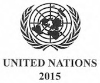

Long-term temperature goal (Art. 2) – The Paris Agreement, in seeking to strengthen the global response to climate change, reaffirms the goal of limiting global temperature increase to well below 2 degrees Celsius, while pursuing efforts to limit the increase to 1.5 degrees.
Global peaking and ‘climate neutrality’ (Art. 4) – To achieve this temperature goal, Parties aim to reach global peaking of greenhouse gas emissions (GHGs) as soon as possible, recognizing peaking will take longer for developing country Parties, so as to achieve a balance between anthropogenic emissions by sources and removals by sinks of GHGs in the second half of the century.
Mitigation (Art. 4) – The Paris Agreement establishes binding commitments by all Parties to prepare, communicate and maintain a nationally determined contribution (NDC) and to pursue domestic measures to achieve them. It also prescribes that Parties shall communicate their NDCs every 5 years and provide information necessary for clarity and transparency. To set a firm foundation for higher ambition, each successive NDC will represent a progression beyond the previous one and reflect the highest possible ambition. Developed countries should continue to take the lead by undertaking absolute economy-wide reduction targets, while developing countries should continue enhancing their mitigation efforts, and are encouraged to move toward economy-wide targets over time in the light of different national circumstances.
Adaptation (Art. 7) – The Paris Agreement establishes a global goal on adaptation – of enhancing adaptive capacity, strengthening resilience and reducing vulnerability to climate change in the context of the temperature goal of the Agreement. It aims to significantly strengthen national adaptation efforts, including through support and international cooperation. It recognizes that adaptation is a global challenge faced by all. All Parties should engage in adaptation, including by formulating and implementing National Adaptation Plans, and should submit and periodically update an adaptation communication describing their priorities, needs, plans and actions. The adaptation efforts of developing countries should be recognized
Finance, technology and capacity-building support(Art. 9, 10 and 11) – The Paris Agreement reaffirms the obligations of developed countries to support the efforts of developing country Parties to build clean, climate-resilient futures, while for the first time encouraging voluntary contributions by other Parties. Provision of resources should also aim to achieve a balance between adaptation and mitigation. In addition to reporting on finance already provided, developed country Parties commit to submit indicative information on future support every two years, including projected levels of public finance. The agreement also provides that the Financial Mechanism of the Convention, including the Green Climate Fund (GCF), shall serve the Agreement. International cooperation on climate-safe technology development and transfer and building capacity in the developing world are also strengthened: a technology framework is established under the Agreement and capacity-building activities will be strengthened through, inter alia, enhanced support for capacity building actions in developing country Parties and appropriate institutional arrangements. Climate change education, training as well as public awareness, participation and access to information (Art 12) is also to be enhanced under the Agreement.
Transparency(Art. 13), implementation and compliance (Art. 15) – The Paris Agreement relies on a robust transparency and accounting system to provide clarity on action and support by Parties, with flexibility for their differing capabilities of Parties. In addition to reporting information on mitigation, adaptation and support, the Agreement requires that the information submitted by each Party undergoes international technical expert review. The Agreement also includes a mechanism that will facilitate implementation and promote compliance in a non-adversarial and non-punitive manner, and will report annually to the CMA.
Global Stocktake (Art. 14) – A “global stocktake”, to take place in 2023 and every 5 years thereafter, will assess collective progress toward achieving the purpose of the Agreement in a comprehensive and facilitative manner. It will be based on the best available science and its long-term global goal. Its outcome will inform Parties in updating and enhancing their actions and support and enhancing international cooperation on climate action.
